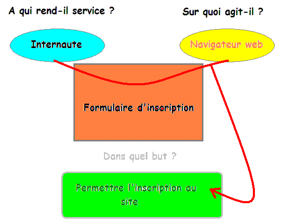

Si vous êtes là, c'est soit parce que vous avez du mal à vous organiser dans vos projets, soit parce que vous avez été intrigués par le titre. J'ai pour objectif de vous aider à mieux vous organiser dans le cadre de vos projets (informatiques, ça va de soi ;) ). Pour ça, je vais vous parler des Cahiers des Charges. Nous verrons notamment :
ce qu'est un Cahier des Charges ;
à quoi ça sert ;
comment en rédiger un pour les sites Web et les programmes.
Cahier des Charges. En effet, ça semble un peu barbare au premier abord. C'est en fait l'abréviation de Cahier des Charges Fonctionnel, que l'on note également CDCF.
Généralités concernant les CDC
Définitions
Je vais essayer de vous définir plus en détail ce qu'est un CDC. Voici ce que nous dit Wikipédia à ce propos :
Citation : Wikipédia
Le cahier des charges fonctionnel (CdCF) est un document formulant le besoin du client, au moyen de fonctions détaillant les services rendus par le produit et les contraintes auxquelles il est soumis.
Je vais essayer d'étayer un peu tout ça. :)
On voit donc que le CDCF a pour rôle de définir le besoin du client. Plus simplement, il explique à quoi va servir le produit final. Nous verrons plus tard qu'il existe des outils à la disposition du concepteur pour l'aider à définir tout ça. Pour formuler le besoin du client, on utilise des fonctions détaillant les services rendus par le produit et les contraintes auxquelles il est soumis. Ça fait très dictionnaire comme définition, mais c'est assez simple au fond. Pour répondre au besoin du consommateur, le produit effectuera différentes actions : c'est le nom qu'on donne aux fonctions. Cependant, ces actions ne peuvent pas être effectuées n'importe quand et n'importe comment. J'ai un exemple simple : un portail à ouverture automatique. La commande d'ouverture a été activée. A priori, le portail s'ouvre. Imaginez qu'un enfant se trouve dans le champ d'ouverture du portail ! Cette situation peut se révéler dangereuse. Il faut donc contraindre le portail à ne pas s'ouvrir, pour éviter d'éborgner ce pauvre enfant. On comprend ainsi nettement mieux ce que sont les contraintes : elles fixent un cadre auquel doit se conformer le produit avant d'exercer sa fonction (souvenez vous, la fonction indique à quoi le produit sert). On les appelle des contraintes, car justement elles sont contraignantes pour le concepteur : il est obligé de les prendre en compte, même si elles ne servent pas directement à la réalisation de la fonction du produit. En général, une des contraintes est le respect des normes de fabrication. Nous y reviendrons plus tard.
A quoi ça sert ?
Question fatidique. :p En effet, à première vue, un cahier des charges n'est pas indispensable. C'est vrai pour les petits petits projets réalisés par des particuliers comme vous et moi. Cependant, pour les entreprises, avoir un cahier des charges qui tient la route est indispensable. En effet, le concepteur doit savoir, avant même de réfléchir à la façon dont il va mettre en place le fonctionnement du produit en question, son rôle, etc. L'objectif ici n'est pas de vous faire un cours complet sur la réalisation d'un CDC en entreprise, mais de vous donner les outils pour en créer lors de vos projets personnels. Cependant, connaitre un minimum la façon dont il est rédigé est toujours intéressant. Nous allons maintenant voir quelles informations fournir dans un cahier des charges dans le cadre de vos projets personnels, et nous nous attarderons ensuite sur les outils à votre disposition à cette fin.
Que mettre/ne pas mettre dans un cahier des charges ?
Le cahier des charges à un rôle bien précis : définir dans quel environnement un objet fonctionne et quelle(s) fonction(s) il doit réaliser. Il doit se contenter de définir cet environnement et ces fonctions, et uniquement les définir. Il ne faut en aucun cas apporter des solutions pour les effectuer. Un exemple concret : une tondeuse à gazon. Sa fonction est facile à trouver : tondre la pelouse (comment ça, elle est pas originale, ma fonction :D ), une contrainte pourrait être de ne pas pouvoir couper un objet d'une épaisseur supérieure à 0.5mm (pour un brin d'herbe, c'est déjà beaucoup). Il est tentant d'essayer d'expliquer comment on réalisera cette fonction et se pliera à cette contrainte. Cependant, c'est typiquement ce qu'il ne faut pas faire. Je le dis et je le répète : dans le Cahier des Charges, on ne doit pas apporter de solutions de conception, mais uniquement expliquer clairement le rôle de l'objet en question. Il existe de nombreux outils pour le faire correctement, nous apprendrons à les exploiter très bientôt.
Une démarche normalisée
Encore un mot barbare. On aime bien donner des noms compliqués à des notions très simples. La démarche de réalisation d'un cahier des charges est dite normalisée, car elle est régie par des normes. Ce sont des sortes de loi, que tous les concepteurs respectent afin de se comprendre entre eux. Bien entendu, il existe un grand nombre de normes. Les normes françaises sont régies par L'AFNor. Elles peuvent sembler contraignantes, mais limitent en fait le risque de se planter dans son cahier des charges (ce qui peut se révéler catastrophique pour les entreprises qui investissent de grosses sommes d'argent dans un projet). Elles définissent un nombre assez important de règles, et proposent notamment une méthode pour présenter le Cahier des Charges rédigé. Cela force les concepteurs à suivre un raisonnement rigoureux et à se poser les bonnes questions au bon moment. La démarche de rédaction du Cahier des Charges Fonctionnel compte grosso modo 3 étapes principales :
L'introduction au problème posé
L'expression fonctionnelle du besoin
Les solutions proposées pour répondre à ce besoin
Chacune de ses parties est accompagnée d'outils qui aident le concepteur à structurer sa démarche et son raisonnement. Ils permettent en plus d'éviter d'avoir à écrire des pages et des pages de textes, car tout est schématisé, comme nous allons le voir.
Introduction au problème posé
Ici, l'idée est simple : il faut donner une description succincte du projet. Expliquer en quoi il consiste, son objectif, une éventuelle prévision des dépenses et bénéfices s'il y a lieu, etc. Il faut aussi lui donner un contexte : sa situation par rapport à d'autres au sein de l'entreprise, les études effectuées et celles à effectuer, ainsi qu'une liste exhaustive des personnes concernées par le projet si elles sont connues à l'avance.
Expression fonctionnelle du besoin
C'est la partie clé du Cahier des Charges, il ne faut absolument pas la rater. En effet, c'est là qu'on définit les fonctions et les contraintes. Chaque fonction et chaque contrainte est définie par un certain nombre d'informations la concernant :
Son nom (il est très important celui-là :p )
Ses critères : ils indiquent dans quelles conditions la fonction en question est considérée comme réalisée. Par exemple, avec notre tondeuse à gazon, une contrainte pourrait être "Ne pas mettre l'utilisateur en danger". Cette fonction est importante, mais il faut la préciser : dans quels cas peut-on considérer que l'utilisateur est en sécurité ? Un des critères pourrait être "La lame de la tondeuse doit être inaccessible". Ainsi, si l'utilisateur ne peut pas toucher la lame, il est clair qu'il ne risque pas de se blesser avec. En général, une fonction est accompagnée de plusieurs critères.
Son niveau : si le critère de la fonction est défini d'une façon numérique, le niveau est la valeur qui est associée à ce critère. Toujours avec notre tondeuse, une contrainte pourrait être "Correspondre à l'énergie disponible". Le critère est la nature de l'énergie (en général, énergie électrique). Par conséquent, le niveau est la quantité d'électricité avec laquelle fonctionnera la tondeuse (on parle de tension) : 230V si la tondeuse est commercialisée en France
Sa flexibilité : il est possible, dans certains cas, d'accorder une tolérance au niveau de réalisation d'une fonction. Si la tension d'alimentation de la tondeuse est de 224V (Volts) au lieu de 230V, ça n'a rien de dramatique : on donne une flexibilité au niveau, qui précise jusqu'à quelles limites la fonction est considérée comme réalisée même si son niveau n'est pas strictement égal à celui défini préalablement. On peut par exemple accorder une flexibilité de +/-12% à la tension d'alimentation. Comme ça, si on a une tension de 224V, ça marche quand même. Le tout est de trouver une flexibilité cohérente en fonction du résultat souhaité. Bien entendu, la flexibilité n'est pas indispensable : pour le respect des normes, elle n'a pas lieu d'être (les normes doivent être respectées dans tous les cas)
Solution proposée pour répondre au besoin
Cette partie est un peu la transition entre la rédaction du Cahier des Charges et la conception. En effet, on commence ici à proposer des pistes de recherche pour la réalisation de chacune des fonctions. L'objectif est d'organiser au mieux la suite du projet, en le découpant en "sous projets". Pour cela, une connaissance parfaite des fonctions du produit en question est indispensable, pour connaitre la teneur en travail qu'elles nécessiteront.
Il y a peu à dire. C'est un peu la zone du gros brainstorming ou tous les génies trollent joyeusement pour faire aboutir leurs idées. :D
Les outils au service du concepteur
La rédaction d'un Cahier des Charges qui tient la route se révélant particulièrement difficile et la probabilité de plantage assez importante, de nombreux outils ont été mis au point pour aider les concepteurs dans leurs recherches.
La bête à cornes
Son objectif est simple : Elle indique à quoi sert le produit. Elle se présente sous cette forme (image tirée de la Wikipédia) :
La matière d'œuvre est ce sur quoi le produit doit agir (pour une tondeuse, il s'agit de... l'herbe :D ).
Le diagramme pieuvre
Je sais, il y a beaucoup d'animaux dans les bureaux d'études. :p
Il permet de relier simplement le produit à son environnement extérieur (c'est-à-dire tout ce qui est susceptible d'influer sur son fonctionnement). Voici un exemple de diagramme pieuvre pour une voiture (toujours tiré de Wikipédia) :
FP1 : Permettre aux utilisateurs de se déplacer sur le sol, rapidement et sans se fatiguer
C1 : Ne pas influer ni être par le revêtement au sol
C2 : Respecter l'environnement, résister à la corrosion
C3 : Être esthétique
C4 : Résister au milieu extérieur
C5 : S'adapter aux énergies disponibles, limiter la consommation
C6 : Respecter toutes les lois et règlementations
C7 : Être confortable, s'adapter à toutes les corpulences
Comme vous le voyez, chaque contrainte est reliée à un élément du milieu extérieur, alors que chaque fonction relie le produit à deux éléments extérieurs.
Il n'existe pas, à ma connaissance, d'outil normalisé visant à lier les fonctions à leurs critères et niveaux. Cependant, si vous en connaissez un, n'hésitez pas à me le signaler. En général, on se contente de créer un tableau avec une ligne par fonction et/ou par contrainte.
Cependant, vous verrez que faire tout ça pour un petit projet amateur est généralement inutile. Je vous ai expliqué globalement comment ça fonctionne en entreprise pour votre culture et pour vous aider à réfléchir sur votre projet, mais cela ne vous sera sans doute pas utile à 100% dans le cadre de vos projets, surtout s'il n'a pas de visée commerciale. En général, votre CDC est assez court : environ 3/4 pages devraient être amplement suffisantes. Bien sûr, si vous en utilisez davantage, ça n'est pas un problème, mais si vous avez écrit un document de 100 pages, vous devriez essayer de le retravailler. :p
Ici, nous allons voir comment rédiger un CDCF correct en programmation, avec pour exemple le langage C. Bien entendu, la démarche est similaire pour tous les langages.
Quelques explications
Quelles sont les particularités des CDCF en programmation ?
Il y a quelques différences entre un CDCF pour un objet et un CDCF pour un programme. En effet, un objet ne doit pas «réagir» en fonction de ce que fait l'utilisateur. Un stylo, qu'on l'utilise avec la main droite ou la main gauche, c'est pareil, alors qu'un programme, si on appuie sur Tab et si on appuie sur Espace, c'est totalement différent.
Que mettre dans le CDCF d'un programme ?
Comme dans un CDCF «normal», il ne faut pas mettre de solution de conception, mais uniquement ce que doit pouvoir ou non faire le programme.
Il faudra lister étape par étape ce qui se passe lorsque l'utilisateur fait quelque chose (appuyer sur une touche, cliquer avec sa souris, donner un coup de marteau sur son unité centrale [dans ce cas, il faudra afficher un message d'erreur, si c'est encore possible :D ] ). C'est assez long, mais si vous pensez à tout, cela simplifiera grandement votre travail au moment de coder. ;) Je vous conseille d'ailleurs pour cette étape de prendre une feuille de papier et de faire une sorte de brouillon de votre algorithme.
Qu'est-ce qu'un algorithme ?
C'est exactement ce que vous êtes en train de faire. C'est-à-dire le listing des différentes «réactions» de votre programme en fonction des actions des utilisateurs. Je vous conseille le tutoriel rédigé par bluestorm : Algorithmique pour l'apprenti programmeur, qui explique bien mieux que moi ce qu'est l'algorithmique. Il faut absolument penser à tout en faisant l'algorithme. Les événements si vous faites de la SDL, et ce qui va se passer lorsque l'utilisateur appuiera sur Suppr alors que vous ne l'aviez pas prévu.
C'est un peu le code de votre programme, mais rédigé en français : vous ne vous souciez pas des if et des else, ou même des while; (ou autres, selon le langage dans lequel vous codez) et encore moins des fonctions de votre programme.
Si vous codez un jeu, il faudra aussi énumérer toutes les interactions possibles (débuter un dialogue, prendre un objet, tomber, sauter, acheter un objet, tuer quelqu'un, ...), et dans quelles conditions ces interactions doivent avoir lieu.
Vous pouvez aussi, si vous réalisez des fenêtres, mettre les images nécessaires ainsi que ce qu'elles représentent.
Si vous réalisez un jeu avec des personnages, vous pouvez aussi ajouter une brève présentation de ceux-ci (en indiquant leurs particularités, par exemple), s'il y a des objets, décrivez à quoi ils servent, etc.
Vous pouvez aussi, si votre projet est particulièrement conséquent, préciser quelle quantité de RAM et de CPU le programme devra utiliser au maximum. Ne donnez cependant cette indication que si vous êtes sûrs de votre coup, uniquement si vous avez l'habitude de programmer et que l'utilisation de la mémoire et du processeur n'ont pas de secret pour vous.
Indiquez aussi sur quel(s) OS votre programme devra être utilisable.
Bref, indiquez tout ce qui va vous être utile pour ne rien oublier lors du codage.
Qu'est-ce qu'il ne faut pas mettre dans notre CDCF ?
Comme dans les autres cas, il y a des informations à ne pas donner, en plus des solutions de conception.
Il ne faut pas mettre les dossiers de votre programme, ainsi que ses fonctions, car ça, on y réfléchit lors de sa conception, et non avant. Il ne faut pas non plus mettre la taille des images ou de la fenêtre, par exemple, car ça aussi, c'est du domaine de la conception.
Actuellement, je n'ai que ces exemples d'informations à ne pas mettre dans un CDCF, mais si vous en voyez d'autres, envoyez-moi un MP.
Un exemple pour bien comprendre
Pour exemple, je vais utiliser le cahier des Charges de M@teo21 dans son TP : Mario Sokoban.
Même si vous ne programmez pas, vous pourrez comprendre cette partie, car elle ne parle que de méthodologie.
Comme vous le voyez, le CDCF est divisé en plusieurs parties :
À propos du Sokoban :
Le but du jeu,
Pourquoi avoir choisi ce jeu ;
Le Cahier des Charges ;
Récupérer les sprites du jeu.
La première partie (à propos du Sokoban) fait un simple tour d'horizon de ce qu'est le jeu, en quoi il consiste, mais ce, sans rentrer dans les détails. Cependant, si vous avez bien suivi le tuto, vous aurez remarqué que La sous-partie Pourquoi avoir choisi ce jeu ne rentre pas tout à fait dans la rédaction du CDCF, car on y parle de création de fichiers .c, comment, pourquoi... Cette étape fait normalement partie de la conception.
La seconde partie parle des capacités du programme (ce qu'il pourra / ne pas faire). C'est la partie fondamentale, il ne faut surtout pas la rater !!
Vous devez tout dire, sans exception : si vous codez en fenêtre, listez tous les événements possibles et leurs conséquences ; si vous êtes en console, indiquez ce qui se passe au niveau de l'affichage de l'écran. En clair, décrivez entièrement ce que devra faire le programme une fois terminé, comme si vous codiez, sauf que vous rédigez en un français habituel, lisible par tous, un peu comme si vous écriviez un roman (sauf que vous pouvez écrire en pseudo-code). C'est assez long, et il ne faut rien oublier...
Qu'est-ce que le pseudo-code ?
Contrairement à son nom, ce n'est pas un langage de programmation. C'est en fait une façon particulière de présenter un algorithme, en reprenant les structures utilisées dans la plupart des langages de programmation (Tant que ; si, alors... sinon, etc.), sauf qu'on ne tient pas compte de la syntaxe particulière des langages de programmation. Prenons l'exemple de l'algorithme du jeu de Plus ou Moins :
TANT QUE nombreSecret non trouvé
RÉPÉTER demander d'entrer un nombre
SI nombreEntre < nombreSecret
ALORS indiquer que le nombre à trouver est plus grand
SINON SI nombreEntre > nombreSecret
ALORS indiquer que le nombre à trouver est plus petit
SINON Indiquer que le nombre entré est correct
FIN SI
FIN TANT QUE
Nota : l'algorithme est simplifiable, mais sous cette forme, il me permet de vous montrer la structure en SI, SINON SI, SINON.
Ensuite, on parle des sprites du jeu. C'est la partie concernant les images du jeu. Cette partie n'est pas indispensable si vous avez peu d'images, mais dès que vous faites des projets un peu gros, vous commencerez à avoir 40-50 images, vous serez bien contents d'avoir une courte description de chacune d'elles ! ;)
Comme vous le voyez, M@teo ne parle pas une seule fois, dans son CDCF, de la façon dont il va s'organiser, il ne fait que présenter le résultat final. J'insiste beaucoup sur le fait que vous ne devez pas donner de solutions de conception, car c'est vraiment important !!
Un conseil supplémentaire : si votre projet est très gros, je vous suggère de mettre la description des images avant de décrire le jeu lui-même. En effet, souvent, lorsque vous décrivez les événements (en fenêtre), ils mettent souvent des images en action. Donc, il vaut mieux savoir à quoi sert chaque image et ce qu'elle représente. Dans l'exemple, il aurait fallu mettre la présentation des sprites avant la partie décrivant que peut / ne peut pas faire le jeu. Cela dit, le projet n'étant pas vraiment très gros, ce n'est pas non plus trop gênant.
En bonus, voici la bête à cornes du jeu : ;)
Strictement interdit de critiquer mes qualités artistiques.
J'en profite pour attirer votre attention sur la matière d'oeuvre ("Sur quoi agit-il ?") : on a tendance à croire qu'il s'agit du joueur, mais ça n'est pas le cas. Le joueur est celui à qui on rend service, mais ce sur quoi on agit est bel et bien son ordinateur (une autre façon de formuler la question pourrait être "De quoi modifie-t-on le comportement ?").
Je ne vous fais pas de diagramme pieuvre car ça n'est pas réellement nécessaire : la seule fonction ici est de divertir le joueur... Une contrainte éventuelle pourrait être l'usage de la SDL, mais rien de plus.
Ici, nous allons voir en détail ce qu'il faut mettre dans un CDCF pour une page web dynamique (avec pour exemple un script PHP).
Cela risque d'être un peu plus complexe que pour un programme, car il faudra penser à tous les liens, toutes les pages qu'on devra créer... Sans pour autant trop entrer dans les détails parce qu'on ne veut pas avoir un document de 30 pages. Si vous avez bien lu, vous vous rappellerez qu'il faut plus ou moins 3-4 pages. Il faudra faire attention à rédiger un CDCF pour chaque "sous-partie" de votre projet : un pour le forum, un autre pour les news, un autre encore pour le livre d'or, un autre pour la gestion du staff, un autre une fois de plus pour... euh... Enfin, vous m'avez compris. ^^
Généralités sur les CDCF en PHP
Ce qu'il faut mettre dans un CDCF en PHP
En fait, comme d'habitude, il faudra lister ce que fera le site (original, n'est-ce pas ?). Par exemple, dans les forums, il faudra dire si les sujets seront éditables, «supprimables», si le titre pourra être modifié, etc. Mais il faudra aussi indiquer des informations supplémentaires : la façon dont cela sera fait.
Cependant - et c'est une des particularités des CDCF pour le web - il ne sert à rien d'indiquer ce que ne pourra pas faire le script. En effet, s'il se passe une chose impossible en PHP, il faut forcément afficher un message d'erreur...
C'est là que ça devient compliqué : il ne faut en aucun cas proposer des solutions de conception mais simplement détailler la façon dont sera faite l'action demandée par l'utilisateur :
la demande devra-t-elle être accessible par lien, ou par menu déroulant, ou autrement ?
Une fois l'action accomplie, où devra être redirigé l'utilisateur ?
etc.
Ce qu'il ne faut pas mettre dans un CDCF en PHP
J'insiste, car c'est vraiment très important : il ne faut pas donner de solution de codage.
Si l'utilisateur doit être redirigé à l'accueil du forum après avoir posté, dites-le, mais ne dites pas comment vous allez appeler le lien qui mène vers l'index du forum.
Un bon exemple pour bien comprendre
Dans mon exemple, je vais rédiger un CDCF pour un système d'inscription à un site Internet quelconque :
Ce que le système devra faire
Les deux phases de l'inscription devront avoir lieu dans des pages différentes.
Première phase de l'inscription
Cette partie indiquera les étapes de l'inscription.
Demander à l'utilisateur d'entrer un pseudo dans une zone de texte. Le pseudo devra contenir entre 3 et 25 caractères.
Demander à l'utilisateur d'entrer un mot de passe qui devra compter entre 6 et 30 caractères, là encore dans une zone de texte.
Demander une confirmation du mot de passe.
Une fois les deux mots de passe entrés, l'utilisateur clique sur un bouton qui vérifie si les deux mots de passe sont les mêmes.
Si c'est le cas, on continue l'inscription.
Si ce n'est pas le cas, on redirige l'utilisateur vers une page d'erreur et on lui fait reprendre l'inscription du départ (oui, je sais, c'est méchant), en guise de punition. :diable:
On demande à l'utilisateur d'entrer une adresse e-mail pour confirmer son inscription.
On l'envoie vers la seconde page de l'inscription, en le faisant cliquer sur un lien.
Seconde phase de l'inscription
Je rappelle que cette phase de l'inscription a lieu dans une page différente de la première.
Cette partie permettra à l'utilisateur de personnaliser son interface membre.
Demander à l'utilisateur s'il souhaite que son adresse e-mail soit visible par un système de cases à cocher. Attention, la case devra être décochée par défaut.
Demander au membre s'il souhaite être visible dans la liste des membres. Là encore, la case devra être décochée par défaut.
Faire une grande zone de texte pour permettre à l'utilisateur de se présenter.
Voilà : après, c'est à vous d'imaginer tout un tas d'options diverses et variées. Je ne le fais pas, mais si vous avez un réel projet, vous devrez vous y atteler.
Voici quand même la bête à cornes :

Là encore, un diagramme pieuvre me semble un peu superflu, le milieu extérieur se limitant à l'internaute, à son navigateur et au serveur... Les seules contraintes qui me viennent à l'esprit sont de ne pas être trop gourmand en ressources et de ne pas être trop long à charger (ça va de paire, en général).
OK, c'est bien, cet exemple, mais moi, j'arrive pas à organiser correctement mon document !! Je fais comment ?
En fait, il n'y a pas d'organisation universelle, le tout étant que votre document décrive précisément ce que fait le script.
Souvent, ce que je fais, c'est une liste détaillant tout ce qui se passe au fur et à mesure que le visiteur avance dans la page. Regardez mon exemple : j'ai détaillé étape par étape ce qui se passe au fur et à mesure de l'inscription. Si au début, vous avez du mal à trouver une organisation bien à vous, je vous conseille de faire pareil. Avec l'habitude, vous trouverez une méthode qui vous correspond mieux. ;)
Ici, nous allons explorer les mystères des CDCF pour créer un design.
Généralités sur le CDCF en CSS
Ce qu'il faut mettre dans un cahier des charges CSS
Voilà : comme dans les autres chapitres, nous allons voir ce qu'il faut mettre dans un CDCF pour un design. Voici ce que je fais, en général :
la couleur des boutons (pour les liens) ;
la couleur des textes écrits dans les boutons ;
la couleur des liens non-boutons ;
la couleur des boutons lorsque la souris passe dessus ;
la couleur des textes écrits sur les boutons lorsque la souris passe dessus ;
la couleur des liens non-boutons lorsque la souris passe dessus.
Si besoin, vous pouvez faire la même chose avec la police.
Je mets aussi :
la couleur et la police des menus ;
la couleur et la polices des textes ;
la couleur et la police des titres.
La position des menus ;
celle de la speedbarre, s'il y en a une.
La couleur ou l'image de fond ;
la couleur ou l'image de la banderole.
Si vous avez des images et qu'elles doivent toutes avoir la même position (ce qui doit être assez rare), indiquez-le aussi ; et idem si vous avez des tableaux, des cadres, indiquez si les angles sont droits, arrondis, la couleur des barres, ...
Comme vous le voyez, c'est assez long, et il faut penser à tout (d'ailleurs, je suis presque sûr d'avoir oublié quelque chose, mais moi, j'ai une excuse : je veux que vous lisiez le tuto en entier). :p
Encore un exemple !
Voilà, on arrive au traditionnel exemple. ;)
Je vais rédiger le CDCF du design de la speedbarre du SdZ (sous New Wave - le design actuel), c'est à dire, cette partie-là de la page :
La speedbarre est décollée de 250 pixels à gauche de l'écran.
Le cadre de la speedbarre est de couleur grise foncé.
Le texte affichant les liens vers l'accueil, les forums, la section Participez et la section Études sont en blanc.
Si la souris passe sur les boutons, leur arrière-plan passe à l'orange. Le texte, lui, reste blanc.
Les liens sont centrés dans leurs cellules, séparés par un trait vertical gris clair d'une hauteur de 14 pixels et d'une largeur de 1 pixel
Les extrémités gauche et droite se terminent par ces images :
-
P.-S. : il se peut que les noms de couleurs que j'ai écrits ne soient pas exacts, car je suis daltonien. N'hésitez pas à me corriger sur les couleurs. J'ai sans doute oublié certaines choses... Dans ce cas aussi, n'hésitez pas à me prévenir.
Je pense avoir fait un tour d'horizon assez complet de ce que sont les Cahiers des Charges et comment bien les exploiter. :) À vous maintenant de bien utiliser cet outil pour mener vos projets au mieux.
Si vous avez des questions, des suggestions ou des remarques, n'hésitez pas à m'envoyer un MP. Par ailleurs, ce tutoriel est sous licence Creative Commons BY-SA : vous êtes invités à le redistribuer et à le modifier.
{kind=link}
{kind=link}